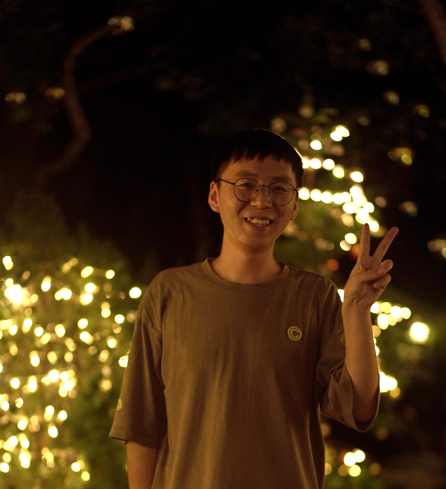

|  |
[Alex] Jinpeng Wang (王金鹏) Tenure-track Professor, Independent PI Central South University (CSU) China jinpengwang at u.nus.edu [GitHub] [Google Scholar] [Semantic Scholar] [Twitter] [Bio] |
My research interests are in Multi-modality Learning and Data-centric AI. Currently, I focus on very large-scale efficient vision-language pre-training (1,000 GPUs and 10 Billion Samples Level) and Multi-modality Large Language Models.
I graduated from Ningxia Yucai High School.
I obtained my bachelor’s and master’s degrees from Sun Yat-Sen University (SYSU).
I completed my PhD at the National University of Singapore (NUS) in three years, where I was supervised by Prof. Mike Zheng Shou. I am now a tenure-track faculty member in Central South University and have sufficient computational resources to support cutting-edge research.
Research topics include Multi-modality Large Language Model and Data-centric AI.
Please drop me an email if interested: link.
News 
[Feb 2025] We release TextAtlas5M, a dataset specifically designed for training and evaluating multimodal generation models on dense-text image generation.
[Oct 2024] I will present my paper "Leveraging Visual Tokens for Extended Text Contexts in Multi-Modal Learning" in NeurIPS 2024 next month. See you in Vancouver!
[Aug 2024] Congratulation!! Our paper "Parrot Captions Teach CLIP to Spot Text" selected as an oral presentation in ECCV24.
[June 2024] We release VisInContext, an efficient Interleaved vision-language pre-training framework for increasing the in-context text length. [Jan 2024] We release CosMo, an efficient Interleaved vision-language pre-training framework for both Image and Video! We also release the first interleaved video-text dataset Howto-Interlink7M. See Website for more details.
[Dec 2023] We release "Parrot Captions Teach CLIP to Spot Text", an work focus on explore one simple bug in CLIP model. See Website for more details.
[Dec 2023] Our extension of "Position-guided Text Prompt for Vision Language Pre-training" is accepted by TPAMI.
[April 2023] Our image2paragraph toolbox for fun, Code.
[Feb 2023] Our PTP and All-in-one are all accepted by CVPR2023.
[Dec 2022] The work "Position-guided Text Prompt for Vision-language Pretraining" has been released in arxiv. Code and pretrained models available here: Code.
[Sep 2022] Our first work for large-scale ego-centric pretrained method "Egocentric Video-Language Pretraining" (second-author) has been accepted by NeurIPS 2022.
[July 2022] One co-author work has been accepted by ECCV2022.
[June 2022] We won first place in CVPR's EPIC-Kitchens Challenge 2022 and OSCC of Ego4D Challenge. Looking kevin's website for details.
[Mar 2022] We release the first and simplest e2e one-stream video-language pre-training method: "All in One: Exploring Unified Video-Language Pre-training" in arix! Code and pretrained models are available here: Code.
[Mar 2022] Congratulation!! Our paper "Object-aware Video-language Pre-training for Retrieval" has been accepted by CVPR2022! Code.
[Mar 2022] Two previous co-author papers has been accepted by ICME.
[Feb 2022] One previous co-author paper "Hierarchical Feature Disentangling Network for Universal Domain Adaptation" has been accepted by Pattern Recognition (PR) (IF: 7.2). URL
[Nov 2021] Congratulation! Our paper "Suppressing Static Visual Cues via Normalizing Flows for Self-supervised Video Representation Learning" has been accepted by AAAI2022. It will be released in Arxiv soon.
[July 2021] Congratulation! Our paper "Learning Spatio-temporal Representation by Channel Aliasing Video Perception" has been accepted by ACM MM.
[July 2021] I was awarded the excellent master graduation thesis (1/224).
[June 2021] Our paper "Multi-level Temporal Dilated Dense Prediction for Action Recognition" has been published in IEEE Transactions on MultiMedia (TMM) (IF: 6.1). URL
[Apr 2021] Congratulation!!! I will take part in Show Lab at the August of this year.
[Mar 2021] I was invited to give a talk in VALSE-semanir in 3.28. Weclome to take part in us! Link!
[Mar 2021] Our BE was recommended to CVer! Link!>
[Mar 2021] I will serve as a reviewer for ICCV2021!
[Mar 2021] Our works on video self-supervised learning were accepted to CVPR!
[Mar 2021] Our work on self-supervised mutual learning was accepted to ICME!
[Jan 2021] I will serve as a reviewer for CVPR2021!
[Oct 2020] Our work on using contrastive learning for video action recognition was accepted to AAAI!
[Aug 2020] The code for our 3D Net Visualization has been relased in My Github, support no-label visualization.
[Apr 2020] Our work on action recognition with dense prediction network was accepted to TCSVT!
[Feb 2018] The code for our real time action recognition has been relased in My Github,
Publications （First/Co-first Author）
 2025.1.1 - Now
2025.1.1 - Now

|
TextAtlas5M: A Large-scale Dataset for Dense Text Image Generation Alex Jinpeng Wang , Alex Jinpeng Wang, Dongxing Mao, Jiawei Zhang, Weiming Han, Zhuobai Dong, Linjie Li, Yiqi Lin, Zhengyuan Yang, Libo Qin, Fuwei Zhang, Lijuan Wang, Min Li Arxiv, 2025. [Paper] [GitHub] [Website] |
2023.1.1 - 2024.12.31
|
Leveraging Visual Tokens for Extended Text Contexts in Multi-Modal Learning Alex Jinpeng Wang , Linjie Li, Yiqi Lin, Min Li, Lijuan Wang and Mike Zheng Shou To appear in NeurIPS, 2024. [Paper] [GitHub] [Website] |
|
|
COSMO: Contrastive Streamlined Multimodal Model With Interleaved Pre-Training. Alex Jinpeng Wang , Linjie Li, Kevin Qinghong Lin, Jianfeng Wang, Kevin Lin, Zhengyuan Yang, Lijuan Wang and Mike Zheng Shou Arxiv, 2024. [Paper] [GitHub] [COSMO Website] [COSMOE Website] |
|

|
Parrot Captions Teach CLIP to Spot Text. Yiqi Lin, Conghui He, Alex Jinpeng Wang (equal contribution) , Bin Wang, Weijia Li, Mike Zheng Shou To appear in ECCV, 2024. (Oral) [Paper] [GitHub] |

|
Too Large; Data Reduction for Vision-Language Pre-Training. Alex Jinpeng Wang , Kevin Qinghong Lin, David Junhao Zhang, Stan Weixian Lei and Mike Zheng Shou To appear in ICCV, 2023. [Paper] [GitHub] |
2022.1.1 - 2022.12.31
|
Position-guided Text Prompt for Vision Language Pre-training. Alex Jinpeng Wang , Pan Zhou , Mike Zheng Shou, Shuicheng Yan To appear in CVPR, 2023. [Paper] [GitHub] [Bibtex] |
|
|
All in One: Exploring Unified Video-Language Pre-training. Alex Jinpeng Wang , Yixiao Ge , Rui Yan, Yuying Ge, Xudong Lin, Guanyu Cai, Jianping Wu, Ying Shan, Xiaohu Qie, Mike Zheng Shou To appear in CVPR, 2023. [Paper] [GitHub] [Bibtex] |
|
|
Object-aware Video-language Pre-training for Retrieval. Alex Jinpeng Wang , Yixiao Ge , Guanyu Cai, Rui Yan, Xudong Lin, Ying Shan, Xiaohu Qie, Mike Zheng Shou To appear in CVPR, 2022. [Paper] [Webpage] [GitHub] [Bibtex] |
|
|
Suppressing Static Visual Cues in Probability via Normalizing Flows for Self-Supervised Video Representation Learning. Manlin Zhang, Jinpeng Wang (equal contribution), Andy J. Ma To appear in AAAI, 2022. Oral. [Paper] [Bibtex] |
2021.1.1 - 2021.12.31

|
Learning Spatio-temporal Representation by Channel Aliasing video Perception. Yiqi Lin, Jinpeng Wang (equal contribution), Manlin Zhang, Andy J. Ma To appear in ACM MM, 2021. [Paper] [Bibtex] |
|
Multi-level Temporal Dilated Dense Prediction for Action Recognition Jinpeng Wang, Yiqi Lin, Manlin Zhang, Yuan Gao, Andy J. Ma To appear in TMM, 2021. [Paper] [Bibtex] |
|

|
Removing the Background by Adding the Background: Towards Background Robust Self-supervised Video Representation Learning Jinpeng Wang, Yuting Gao, Ke Li, Yiqi Lin, Andy J. Ma, Hao Cheng, Pai Peng, Rongrong Ji, Xing Sun To appear in CVPR, 2021. [Paper] [Webpage] [Video] [GitHub] [Bibtex] |

|
Enhancing Unsupervised Video Representation Learning by Decoupling the Scene and the Motion Jinpeng Wang , Yuting Gao, Ke Li, Jianguo Hu, Xinyang Jiang, Xiaowei Guo, Rongrong Ji, Xing Sun In AAAI, 2021. [Paper] [Webpage] [Video] [GitHub] [Bibtex] |
2020 & before

|
Revisiting Hard Example for Action Recognition Jinpeng Wang, Jianguo Hu, Shiren Li, Zhihao Yuan In TCSVT, 2020. [Paper] [GitHub] [Bibtex] |
|
Rethinking Temporal-Related Sample for Human Action Recognition Jinpeng Wang, Shiren Li, Zhikui Duan, Zhihao Yuan In ICASSP, 2020. [Paper] [Bibtex] |
|

|
Spatio-Temporal Bottom-Up Top-Down Attention Model for Action Recognition Jinpeng Wang, Andy J. Ma In ICIG, 2019. [Paper] [Bibtex] |
Awards
2022 Showlab Annual Award. ($1,000)The champion of CVPR'22 Epic-kinetics challenge (2022).
The 1st place in Ego4D challenge (2022).
The final awarded list of AI SINGAPORE PhD FELLOWSHIP PROGRAMME ($$240,000).
2021 Excellent Graduation Thesis (1/224).
Reviewer recognitions, CVPR 2021, ICCV 2021, AAAI 2021, TCSVT.
The First Prize Scholarship (2020).
Second Prize of College Students Innovation and Entrepreneurship Competition (2018).
Excellent undergraduate thesis (2017).
Collaborators
I have gotten to work with some wonderful collaborators.-
Linjie Li, Research Scientist
Zhengyuan Yang, Research Scientist
Lijuan Wang, Principal Research Manager
-
Pan Zhou, @SAIL
Shuicheng Yan, Professor of @NUS
 @Tencent PCG ARC Lab
@Tencent PCG ARC Lab
-
Xin Sun, @HKU
Rongrong Ji, Professor of @XiaMen University
-
Andy Jinhua Ma, Associate Professor
Talk
|
Time: 2021.2.12; Title: CVPR21 BE Demo; Source: Youtube
|
Time: 2021.3.29; Title: VALSE STUDENT WEBINAR; Source: Bilibili (China)
|